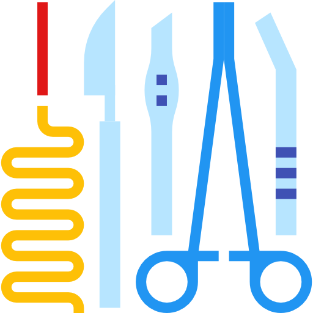

VETERINARIA MIS 4 PATAS
Emergencia las 24 horas
Unidad de Video Endoscopia Diagnóstica y Terapéutica
Somos los pioneros, con más de 12 años de experiencia ofreciendo el servicio de endoscopia diagnóstica y terapéutica para caninos, felinos y animales silvestres.
Unidad de Cirugía de Mínima Invasión Laparoscópica
Ofrecemos el servicio de Cirugía de Mínima Invasión Laparoscópica, a través de un staff de médicos altamente calificados, infraestructura y equipamientos de última generación.
Unidad de Medicina Reproductiva y Banco de Semen
Contamos con los últimos protocolos diagnósticos y terapéuticos para el manejo de las enfermedades que afectan el sistema reproductor de nuestras mascota. Y desde hace dos años, venimos ofreciendo el servicio de congelamiento de semen, bajo los protocolos de CLONE USA.